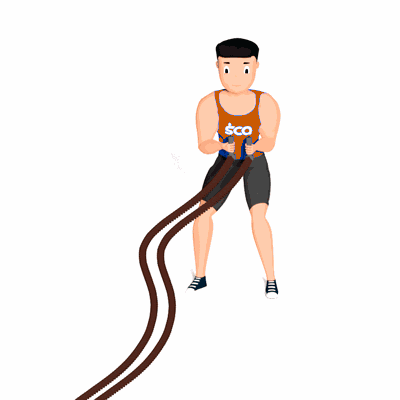

Corda Naval Serpente

O exercício trabalha a estabilidade e a produção de força do core, como também a resistência dos membros superiores.
Ficha Técnica
Tipo: CrossFit
Grupo Muscular: Corpo
Aparelho: Nenhum
Músculos: Nenhum
Como realizar
- 1.Segure as extremidades das cordas;
- Posição anteroposterior, com leve flexão de joelhos, quadris e tronco e com os músculos do core sempre ativados;
- Mova os braços de um lado para o outro e gire o tronco de forma simultânea, dessa forma a corda irá se mover como uma serpente;
- Repita os movimentos pela quantidade de tempo orientada pelo professor(a).
 RC STORE
RC STORE